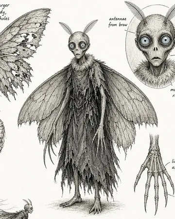
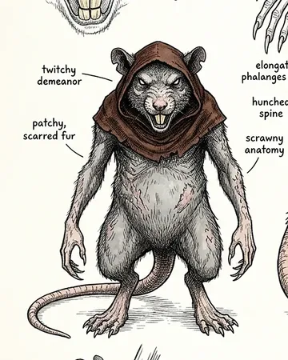
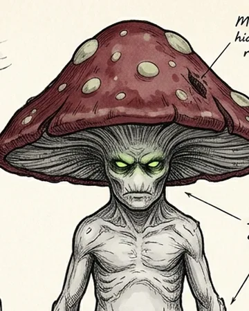

The setting behind every Rabblings game
The Journal
The world after the gods left: a vortex that never stops turning, islands that will not stay put, demigods who want paying, and eight peoples with no reason to like each other.
Journals by an unknown scholar turn up all over the world, signed only with the same three-letter monogram. Nobody has knowingly seen him. He travels alone, seems to live far longer than he should, and leaves his journals at temples and altars for reasons he never gives.
The originals are enchanted: they stay fresh, resist damage, and glow faintly in the hand. Every attempt to copy the enchantment has ended badly for the copier. What follows is a translation from his dialect of the High-born Tongue. His words are set in his own hand; our notes are boxed, like this one, and are not his.
site/img/journal/lore-journal.webpThe Great Disappointment
The original gods are gone. Every culture broadly agrees that they left, but peoples, religions and scholars disagree about why, and nobody agrees on when.
The event brought profound physical and magical changes. Deaths were widespread and seemingly random. Mutations were common, most harmful, a few useful, and some changed whole clans for good. Many civilisations vanished, leaving ruins whose builders are often unknown.
It did not create magic. It changed how magic behaves, and much old knowledge was lost with it.
The ages
The scholar sorts the world’s history into rough ages, and admits the edges are guesses. No two peoples count the years the same way, and most do not count them at all.
- The time of the gods. Before the Great Disappointment. Known now mostly from ruins whose builders nobody can name.
- The Great Disappointment. The gods leave. Whether it took a night or a lifetime, nobody agrees.
- The Mud Age. The first generations after. Survivors lived in small, freshly mutated clans whose names nobody kept. The demigods of the time fought over them: raising and drowning the land, building shrines, and breeding gifts and flaws into their followers. Shrine-keepers of the time spoke of magic as five strands woven through a shrine: Heat and Cold, Force, Earth, Life and Decay, Shadow and Light. The setting of Thy Will Be Mud.
- The age of the peoples. The eight peoples and many smaller ones, settled clans and old grudges, and demigods who demand their tribute in substances. The setting of Marching Orders.
Which Mud Age clans became which of today’s peoples is disputed. The scholar has his guesses. He never writes them down plainly.
On the Mud Age
The oldest songs I have collected agree on very little, except mud. Every one of them has mud in it, the way the newer songs have beer.
In the Mud Age, they say, a god did not speak to you. It moved the ground under you until you understood, and if you still did not understand, it flicked you. I have heard this from three peoples who agree on nothing else, so I am inclined to believe it.
Every people I have asked claims the oldest mud as its own. They cannot all be right. I suspect none of them are, and that the ancestors in question would not have cared, being busy at the time.
The five strands are not taught any more. I think they were never real boundaries, only the first way anyone found to explain what the shrines did. It is still a better explanation than most I have been offered since.
site/img/journal/mud-shrines.webpThe vortex
A vast magical vortex formed at a fixed point on the globe, reaching high into space. Magic is channelled through it or shaped by it, but it is not the only source: magic still works on the far side of the world.
It is always active and fluctuates without warning, with visible flashes, electrical hums and sudden shifts in the floating islands. Nobody is known to have reached its centre and returned.
On the vortex
From high ground three days’ walk away it looks like weather that has decided not to move. Closer, it hums the way a cut wire hums, and the hair on the arms of my Goblin guide stood up for an hour before he admitted he was frightened.
The islands near it do not drift; they hurry. I watched one sink behind a ridge and come up on the other side, turning. The temples nearest it are the most fought over. The magic is stronger there, the priests say. So are the funerals.
Nobody I met had been to the centre. Several had met somebody who had. None of those came back, which makes them difficult to interview.
site/img/journal/lore-vortex.webpFloating islands
Floating islands vary hugely in size, height, movement and magic. Some drift steadily for years and then turn chaotic; others race, sink and resurface, or change course. They collide, break apart, fall and merge, and have destroyed settlements and whole civilisations.
Some were refuges during the Great Disappointment. Their isolated peoples may differ greatly from their relatives elsewhere, and many are hostile to outsiders. Most islands are unexplored.
On the islands
There is an island I have visited three times in what I would call one lifetime. The first time it was a meadow above a lake. The second, it had come down hard on a hillside, and its people had moved into the wreck of the hill. The third, it was aloft again, and the people on it denied ever having been anywhere else.
I believe them. They were not the same people.
Most islands are unexplored. This is less romantic than it sounds. Most of the explorers are, by now, also unexplored.
site/img/journal/lore-islands.webpMagic and the eight substances
Magic runs through the whole world and everyday life. It has no fixed schools: traditions exist because people found ways to teach it, not because the boundaries are real. Results depend on the user, the materials, the order of a ritual and the magic of the place, which is why so little of it survives being written down.
Grog, Murk, Cinders, Glimmer, Ale, Scrap, Bone Dust and Spores are made at the request of demigods. No substance belongs to one race alone, though the races that made and used them for generations may have adapted to them.
Demigods, and the word “Rabblings”
The demigods are real, present and hungry. They demand tribute, shape events and punish those who refuse them. They are not true gods: some are far stronger than others, they rarely take a body, and they can die for good. They compete constantly for followers, and need offerings to grow.
Demigods call mortals “Rabblings”. It is their word, not a name the races use for themselves.
On the demigods
A Ratfolk priest told me his demigod had spoken to him in the night and asked for tribute. I asked what it sounded like. He said: like the Master of Litters, but worse.
They are real; I have seen the scorch where one was refused. They are also hungry in a way that has nothing to do with the stomach, and a temple with fewer worshippers each year has the look of a house where the owner is ill. They call us all Rabblings, every people and every clan. I have wondered whether the old gods had a word for the demigods, and whether it was any kinder.
The priest’s demigod has gone quiet since. He says it is angry with him. He may be the only one who thinks so.
site/img/journal/lore-temple.webpWildlife, monsters and demons
Every living thing was changed by the Great Disappointment. Some familiar animals remain recognisable; much of the rest is new, altered past recognition, or simply unknown. Magic pushes a natural ability further, but the wild still follows ordinary rules: things hunt, hide, graze and rot, and nothing is bigger than the largest ancient beasts.
Monsters and demons are something else: unnatural entities that only demigods can summon or unleash, mostly as weapons against their enemies.
On the Ledge Stalker
The Ledge Stalker lies along a rock shelf so still that the moss has an opinion about it. It will wait half a day for something to pass beneath.
My guide, a young Goblin, had heard this, and walked along the foot of the cliff anyway, as a matter of principle. It did not take him. It took the Goblin behind him, who had no principles at all, only poor timing.
I drew it afterwards from the ledge it had left. The drawing is accurate except for the eyes.
site/img/journal/creature-ledge-stalker.webpsite/img/journal/creature-gale-raptor.webpsite/img/journal/creature-mire-lurker.webpsite/img/journal/creature-cave-spider.webpPeoples and war
There are many peoples and no shared law. Most live in small independent settlements, clans, cults and local kingdoms; large powers arise only by conquest and fall apart when their rulers do. War is common at every level, even between clans of one race, and alliances between races are rare, local and short.
Mercenaries are everywhere. Temples are protected by payment or by military cults, not by respect. Weapons are crude, blackpowder at most, which is why an enchanted blade is worth a village.
Eight of many
The eight peoples
These are the main races of Marching Orders, not the only ones. Their origins are unknown; the scholar has his doubts about everyone’s version.
 GoblinsA Goblin retreat is either a retreat or an invitation.
GoblinsA Goblin retreat is either a retreat or an invitation. SwampfolkIn the marsh the water watches you first.
SwampfolkIn the marsh the water watches you first. ImpsImps are friendly enough.
ImpsImps are friendly enough.
FairiesA Fairy will gladly show you the way out of the garden. DwarvesA Dwarven promise is worth more than most coin, and costs the Dwarf more than most coin to keep.
DwarvesA Dwarven promise is worth more than most coin, and costs the Dwarf more than most coin to keep.
RatfolkThe Ratfolk build fast, breed faster, and forgive nothing at all. SkeletonsA Skeleton gets one second chance.
SkeletonsA Skeleton gets one second chance.
Mushroom FolkThe Mushroom Folk will consider your request.| People | Home | Nature | Led by | Substance | Clans |
|---|---|---|---|---|---|
| Goblins | Bog and mines | Cheap, sneaky swarm | The Warlord | Grog | Mudfoot and Ashgut |
| Swampfolk | Drowned marsh | Leaping frog people | The Elders | Murk | Reedback and Mudgill |
| Imps | Cinder forge | Fire-loving pranksters | The Forgemaster | Cinders | Cinderhorn and Sootwing |
| Fairies | Giant garden | Winged, flighty tricksters | The Queen (one per coven) | Glimmer | Thistlewing and Moonmoth |
| Dwarves | Deep halls | Grumpy, honour-bound tunnellers | The Thane | Ale | Ironbrow and Deepdelver |
| Ratfolk | The warrens | Scurrying breeders | The Master of Litters | Scrap | Stitchnose and Sewerclaw |
| Skeletons | The crypts | Will not stay dead | The Bonelord (of one horde) | Bone Dust | Greybone and Hollowrib |
| Mushroom Folk | Glowing caves | Strange fungus people | The Mycelium (its Council of Elders) | Spores | Redcap and Blackspore |